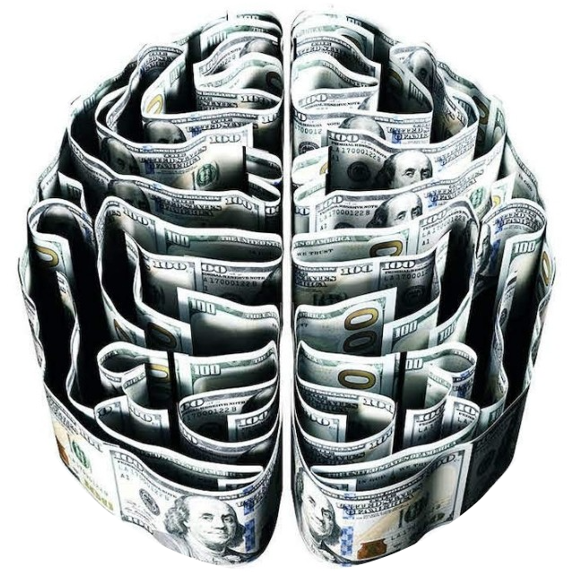
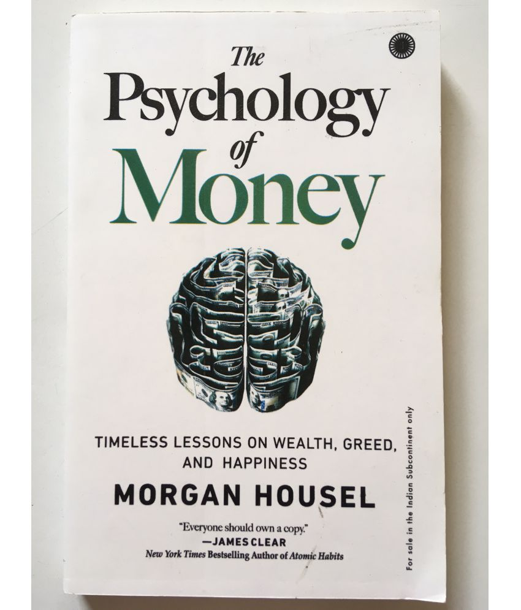
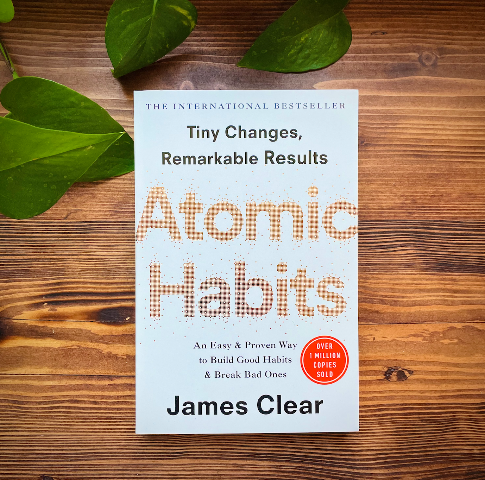

3.The 5AM Club

These are the books that I have read this year :
|  | The author (MORGAN HOUSEL) in this book tells about some timeless lessons on money , greed , fear ,etc. It has some
topics that will totally blow your mind and is mainly concerned about changing the views and adding knolwedge about money
as most of the people are not aware about these concepts. I read this book at an early age and I totally loved this books
and this a must read book for all especially the teenagers so that they have a clear concept about money. It is a books
related to finance and even a normal person let it be a student or a professional its a great book. He even talks about
wealth creation and makes us aware of the two factors that is LUCK AND RISK that are closely related to money.I dont wamt
to diclose evrything over here what I would say is what are you waiting for just get this books and read it I am pretty
sure that you will fall in love with this books. Enjoy reading.  |
|  | I won't tell more about this book and hope that you have atleast heard if not yet read about this book. This Books mainly focuses on the power of habits and how small habits with regular implementation leads to a drastic chnage in your life. The author even provides some action plans at the end of each chapter and you might think that what's the big deal we know about habits but trust me this like a game changer book. |
|
This is a remarkable book in which the author tells us about the benifits of waking up early at 5am through a story. It even tells us how to plan our day especially in the morning at by the 20/20/20 rule. One line that I loved the most was “Change is hardest at the beginning, messiest in the middle and best at the end.” He evan say "Own your morning elevate you life". |
| This is one of the best book that one can read for personality development as well as mindset development. This book focuses on how can one live a best life as the title suggests.It makes us clear about many topics and the author has covered evrything that is required in 40 chapters. It also focuses on making connections with others, spending time with the one who is better than you, character development, how to make money, body language, etc. |